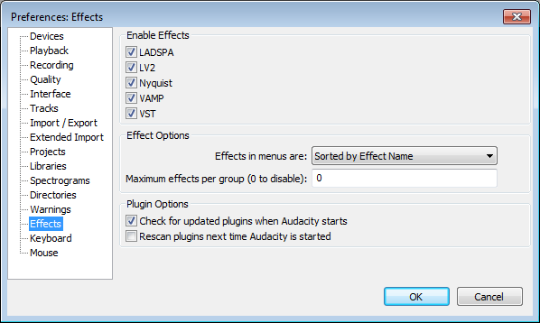
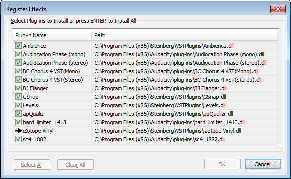

Effects Preferences
From Audacity Manual
- Accessed by: (on a Mac
- 
- Click on any of the other Preferences sections in the above image to go directly to that Preferences page.
Enable Effects
Put a checkmark in each box to enable each type of effect supported by your operating system. The links in the list below provide installation instructions for each type of effect.
- LADSPA: Enable LADSPA effects.
- LV2: Enable LV2 effects.
- Nyquist: Enable Nyquist effects.
- VAMP: Enable VAMP analysis effects.
- VST: Enable VST effects.
- Audio Unit: Enable Audio Unit effects (Mac only).
You must exit and restart Audacity for these changes to take effect.
Effect Options
- Effects in menus are:
- Sorted by Effect Name: Effects are listed in one long menu sorted by effect name, built-in effects above the divider then plugins below the divider.
- Sorted by Publisher and Effect Name: Effects are listed in one long menu, built-in effects sorted by name above the divider then plugins sorted by publisher then name below the divider.
- Sorted by Type and Effect Name: Effects are listed in one long menu, built-in effects sorted by name above the divider then plugins sorted by type then name below the divider.
- Grouped by Publisher: Effects are grouped by effect publisher, with effects in each group in a sub-menu. The "Audacity" group for built-in effects is above the divider and groups for plugins are below the divider.
- Grouped by Type: Effects are grouped by effect type, with effects in each group in a sub-menu. The "Audacity" group for built-in effects is above the divider and groups for plugins are below the divider.
- Maximum effects per group (0 to disable): If enabled by setting a non-zero value, this controls for the "Sorted" options the maximum number of plugins allowed in the main menu before they are grouped into sub-menus. For the "Grouped" options this controls the maximum number of plugins allowed in a sub-menu before being grouped into a secondary sub-menu. Each Group is named according to the number of plugins it contains in numerical order. For example, if there were 10 plugins and the value was set to "5", there would be two groups "Plug-ins 1 to 5" and "Plug-ins 6 to 10".
- If you have the same plugin in different locations that are searched by Audacity
- If there are separate mono or stereo versions of a plugin that are given the same internal name.
Plugin Options
- Check for updated plugins when Audacity starts: This option is enabled by default. When enabled, Audacity will check at next launch for any VST, LADSPA or Audio Unit (Mac OS X) plugins that have been added to any of the locations Audacity checks for these plugins. Audacity will list these added plugins in the Register Effects dialog giving you the choice to enable them or not.
- Rescan plugins next time Audacity is started: This option is disabled by default because once plugins have been successfully loaded, Audacity caches their existence in the pluginregistry.cfg file stored in Audacity's folder for application data. When this "Rescan plugins" option is enabled, Audacity will display the Register Effects dialog at next launch, giving you the choice to enable or disable each VST, LADSPA or Audio Unit plugin that the scan detects.
Register Effects dialog for LADSPA, VST and Audio Unit effect plugins
When you use Audacity for the first time, Audacity will scan for supported plugins of all types. The Register Effects dialogue lists all LADSPA, VST and Audio Unit (Mac OS X) plugins that are detected, with checkboxes to enable each plugin or not. On Windows and Mac, this first time dialog will list a minimum of hard_limiter_1413 and sc4_1882. Those two plugins are shipped with Audacity and you will usually want to enable them.
After OK'ing this dialogue, all detected Nyquist, LV2 and VAMP plugins (including the Nyquist plugins shipped with Audacity) will also load, along with the plugins chosen in the dialogue. If Audacity finds a "shell" VST plugin that hosts multiple effects, a dialog will appear showing the progress of registering the individual effects in the shell.
After first Audacity launch, the Register Effects dialogue only appears again at launch time:
- When Audacity detects new LADSPA, VST or Audio Unit plugins (if the check for them is enabled in Plugin Options)
- When a rescan of plugins is enabled in Plugin Options, which behaves like the "first time" scan above
- When you reset Audacity Preferences, which also behaves like first time scan.
Some unsupported effects may be listed in Register Effects as noted below.
|
- 
The names of the detected plugins will be listed alphabetically for each folder in the Path column. All list items have their checkboxes checked by default, the green checkmark indicating that the plugin will be loaded. To load all the detected plugins, just click then Audacity itself will launch. If you deselect some items by mistake, you can quickly re-enable the entire list by choosing the button. The button lets you disable the entire list. This provides a quick method of then enabling only a few plugins in a long list.
To disable loading of a specific plugin, left-click the item's row or checkbox which removes the checkmark. Similarly, click to re-enable a disabled item. Using the keyboard, press Up arrow, Down arrow, Page Up or Page Down to navigate the list then press Space to check or uncheck the current item's checkbox. Finally, click to load the enabled plugins and launch Audacity.
The black arrow in the list (as in the image above) indicates which plugin is currently being loaded.
Providing you click and the enabled plugins load successfully, then next time you launch Audacity there will be no Register Effects dialog. The plugins that you previously enabled in the dialog will appear in the Effect menu, ready to be used when you select them.
If you click in the dialog or if loading a faulty plugin causes Audacity to crash, the "Register Effects" dialog will appear again next time you launch Audacity. If Audacity crashed you can therefore use the dialog to experiment by disabling plugins that may have crashed. Alternatively, before restarting Audacity you can look in the pluginregistry.cfg file in the Audacity folder for application data. This file will list which plugins Audacity had managed to load before it crashed.
Audacity looks in the following locations for plugins controlled by the Register Effects dialog
- VST:
- Windows, Mac and GNU/Linux:
- The Audacity plug-ins folder in the location Audacity is run from:
- On Windows and OS X the "Plug-Ins" folder is in the directory where Audacity resides - usually C:\Program Files or C:\Program Files (x86) on Windows or the "/Applications" folder on OS X
- On Linux you must add a "plug-ins" folder to /usr/bin/ (if you installed a packaged version of Audacity) or to /usr/local/bin (if you installed a self-compiled version of Audacity)
- The "Plug-Ins" folder in Audacity's folder for application data.
- The Audacity plug-ins folder in the location Audacity is run from:
- Also on Windows:
- C:\Program Files\Steinberg\VSTPlugins (or C:\Program Files (x86)\Steinberg\VSTPlugins on 64-bit systems).
- Windows Registry key HKCU\Software\VST\VSTPluginsPath
- Windows Registry key HKLM\Software\VST\VSTPluginsPath
- All paths specified by the "VST_PATH" environment variable
- Also on Mac OS X:
- ~/Library/Audio/Plug-Ins/VST
- /Library/Audio/Plug-Ins/VST
- All paths specified by the "VST_PATH" environment variable
- Also on GNU/Linux:
- All paths listed in the "VST_PATH" environment variable
- If no VST_PATH environment variable is found, the following are searched:
- LIBDIR/vst (where LIBDIR is defined at build time)
- /usr/lib/vst
- /usr/local/lib/vst
- ~/.vst
- If no VST_PATH environment variable is found, the following are searched:
- Windows, Mac and GNU/Linux:
- LADSPA:
- All operating systems:
- The path specified by the LADSPA_PATH environment variable
- The Audacity plug-ins folder
- On Windows and OS X the "plug-ins" folder is in the directory where Audacity resides - usually C:\Program Files on Windows or the "Applications" folder on OS X.
- On Linux, the "plug-ins" folder is in usr/share/audacity if you installed an Audacity package supplied by your distribution, or usr/local/share/audacity if you compiled Audacity from source code. Optionally a plugin folder can be created in the home directory ~/.audacity-files/plug-ins.
- Also on OS X:
- ~/Library/Audio/Plug-Ins/LADSPA
- /Library/Audio/Plug-Ins/LADSPA
- Also on GNU/Linux:
- ~/.ladspa
- /usr/local/lib/ladspa
- /usr/lib/ladspa
- $LIBDIR/ladspa
- All operating systems:
- Audio Units:
- Mac OS X:
- ~/Library/Audio/Plug-Ins/Components (user plugins)
- /Library/Audio/Plug-Ins/Components (system-wide plugins)
- Mac OS X: